구리 인창동 래미안 403동
3연동 현관중문 시공
현관 입구에 화이트 프레임의 3연동 중문을 설치한 사례입니다. 세로결 패턴 유리를 적용해 현관과 실내를 자연스럽게 구분하면서 밝고 정돈된 인상을 살렸습니다.
시공 위치 : 경기도 구리시 인창동 래미안 403동
중문 형태 : 3연동 현관중문
디자인 : 화이트 프레임 · 세로결 패턴 유리
중문 형태 : 3연동 현관중문
디자인 : 화이트 프레임 · 세로결 패턴 유리
현관중문을 설치하는 이유
현관문을 열었을 때 외부 공간과 거실이 바로 연결되는 구조에서는 중문이 하나의 완충 공간 역할을 합니다. 찬 공기와 먼지, 복도에서 발생하는 생활 소음이 실내로 직접 유입되는 것을 줄이는 데 도움이 되며 현관과 생활공간을 시각적으로 구분해 집 안이 한층 정돈되어 보입니다.
3연동 중문의 공간 활용
3연동 방식은 여러 문짝이 함께 움직여 출입 공간을 효율적으로 사용할 수 있는 방식입니다. 이번 현장은 현관 폭에 맞춰 3연동 구성을 적용하고, 밝은 화이트 프레임과 세로결 유리를 조합해 기존 실내 인테리어와 자연스럽게 이어지도록 시공했습니다.
시공사진
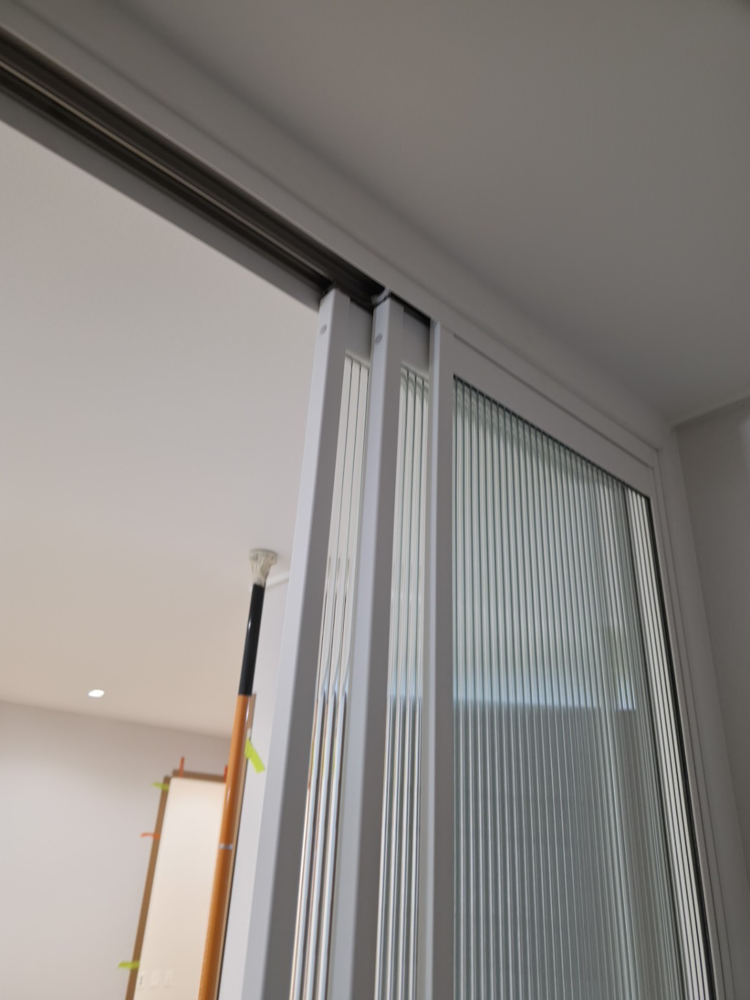
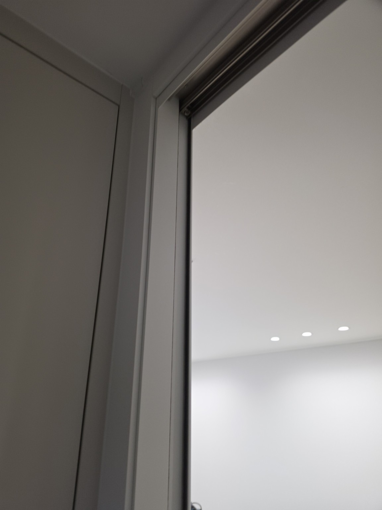
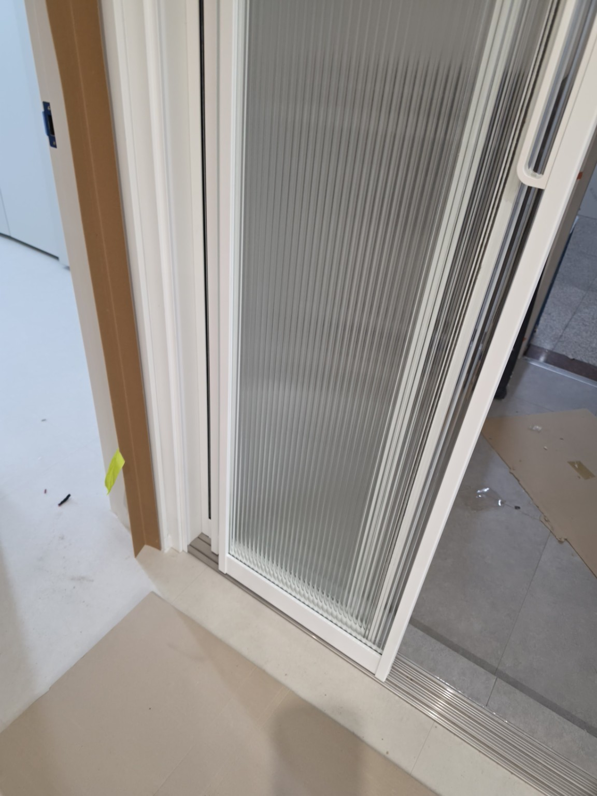
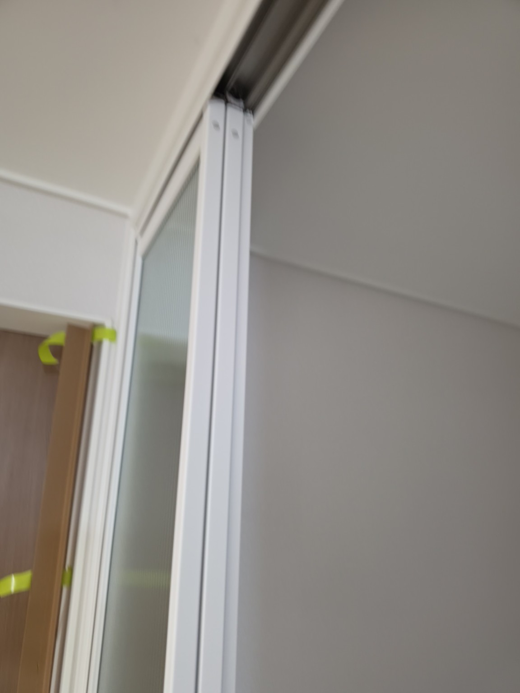
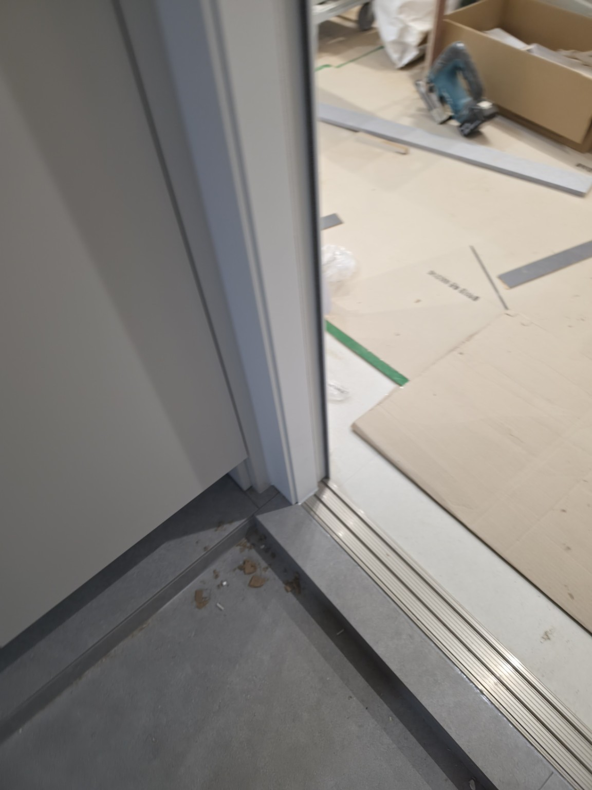
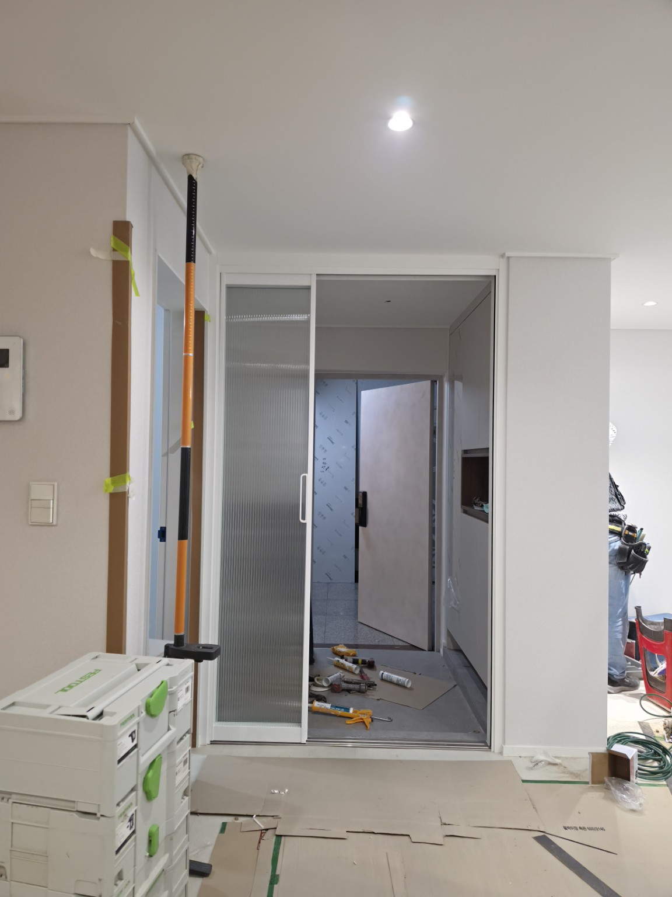
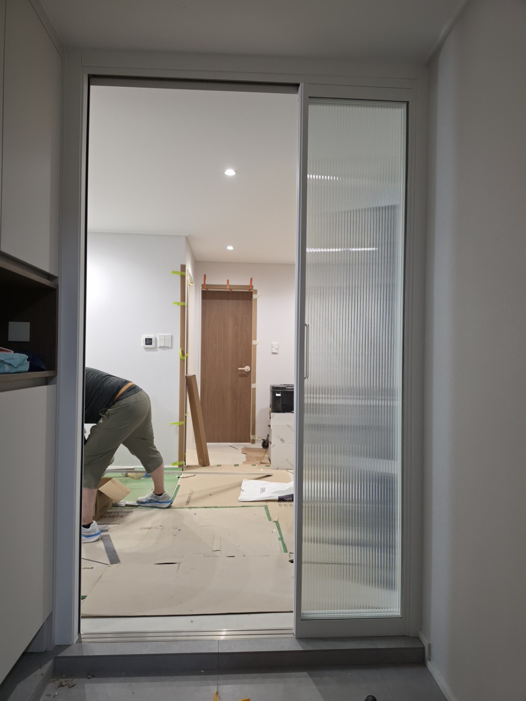
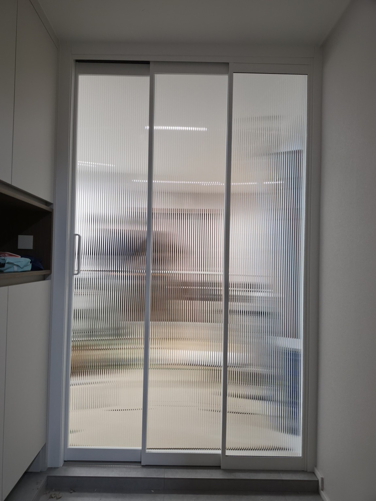
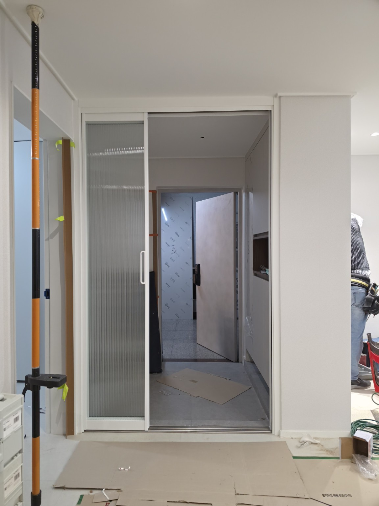
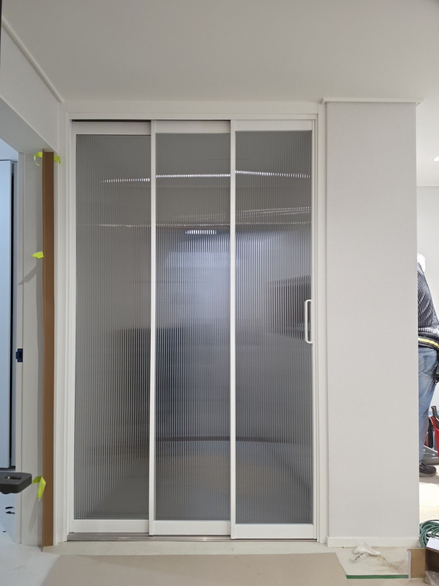
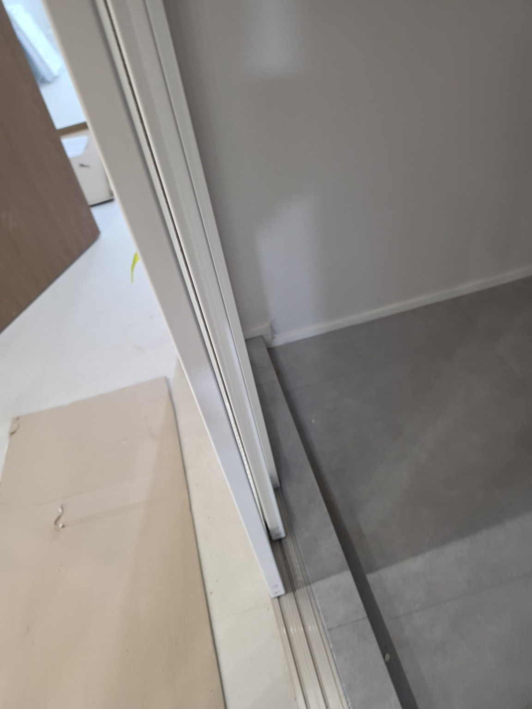
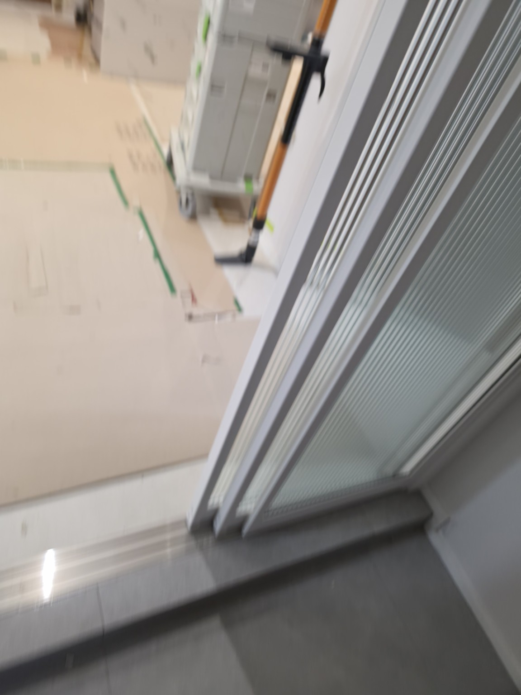
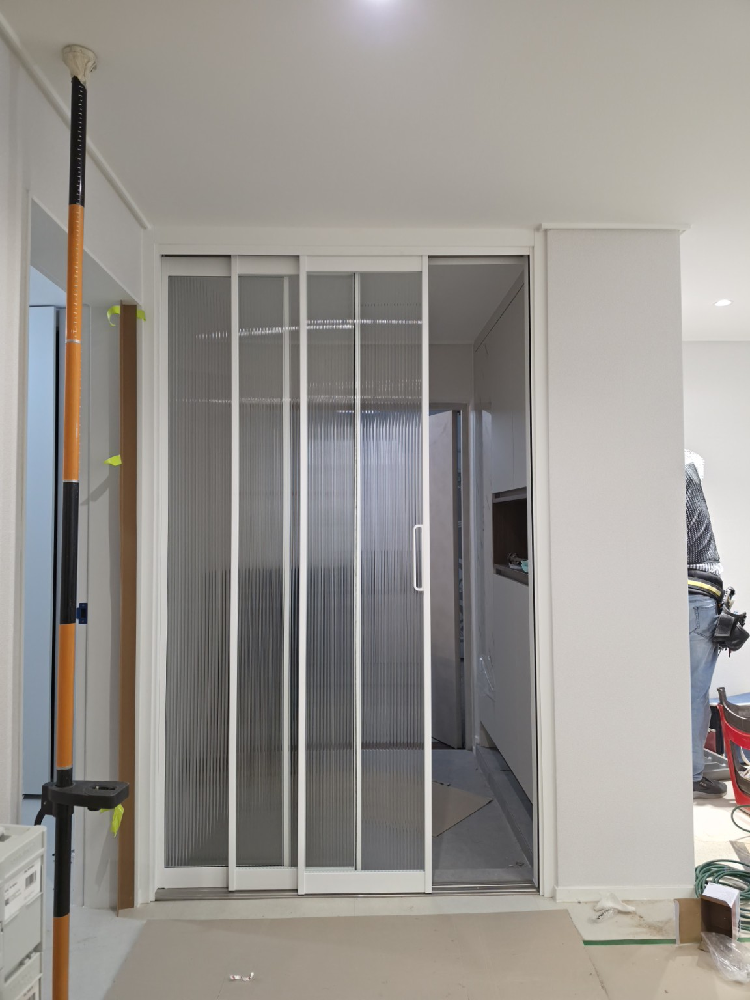
자주 묻는 질문
Q. 3연동 중문은 좁은 현관에도 사용할 수 있나요?
현장 폭과 구조를 확인한 뒤 적합한 문 구성으로 제작하는 것이 중요합니다.
Q. 중문을 설치하면 현관과 거실이 완전히 차단되나요?
중문은 공간을 한 번 더 분리해 찬 공기·먼지·생활 소음의 직접 유입을 줄이는 데 도움을 주는 제품이며, 완전한 기밀·방음 설비와는 다릅니다.